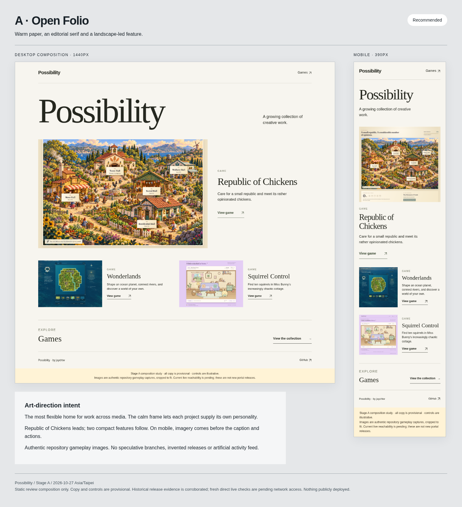
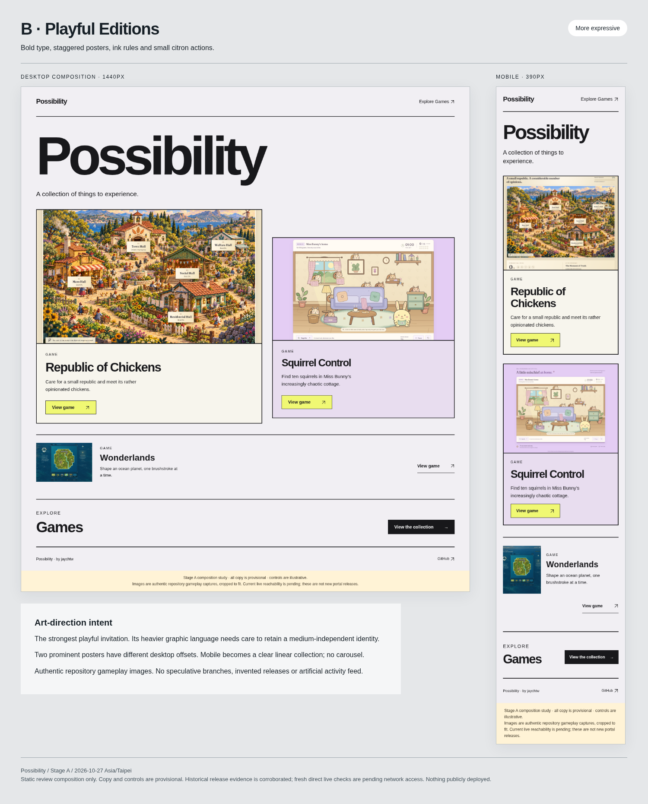
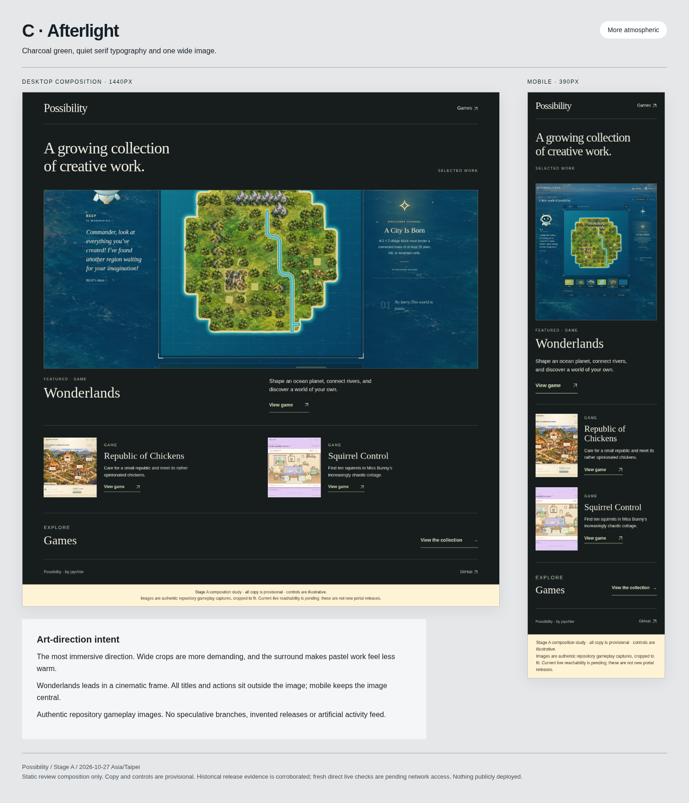

2026-10-27 · Asia/Taipei · Stage A only
Possibility
Reconnaissance & art direction
Recommend A · Open Folio: a spacious editorial frame that gives real work room and remains open to other media.
Awaiting your visual-direction approval. No production portal has been built or deployed. Public Pages requests are blocked by this environment’s network policy; historical release approvals and hosted verification runs are corroborated. Fresh live/root checks remain pending.
A · Open Folio
Warm paper, an editorial serif and a landscape-led feature. The most flexible home for work across media. The calm frame lets each project supply its own personality.

B · Playful Editions
Bold type, staggered posters, ink rules and small citron actions. The strongest playful invitation. Its heavier graphic language needs care to retain a medium-independent identity.

C · Afterlight
Charcoal green, quiet serif typography and one wide image. The most immersive direction. Wide crops are more demanding, and the surround makes pastel work feel less warm.

Proposed next step
Select A, B or C, or request a focused revision. Visual approval authorizes autonomous Stage B work in the existing Possibility repository, testing and a reviewable local release candidate. Public deployment and edits to any other repository still require explicit authorization.
Cloud network draft saved: api.github.com and jaychtw.github.io. Review/save in environment settings and publish the cloud environment configuration as required to enable fresh direct checks; this is separate from publishing the website.